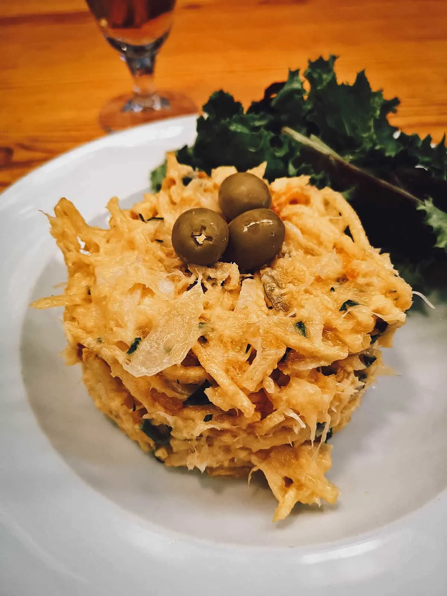

Bacalhau

Bacalhau à Brás
is a quintessential Portuguese dish that combines the rich flavors of
salted codfish with eggs and crispy straw potatoes. Bacalhau à Brás is a
beloved Portuguese classic, showcasing the country's deep-rooted culinary
traditions and the irresistible allure of salted codfish.
Ingredients
- 454 g dried salt cod, soaked overnight and cooked
- 105 ml olive oil, divided
- 680 g russet potatoes, peeled, cut into matchstick-size strips (about 6 cups)
- 1 large onion, thinly sliced
- 1 bay leaf
- 8 large eggs
- 1/2 teaspoon salt
- 1/2 teaspoon freshly ground black pepper
- 4 tablespoons chopped flat-leaf parsley leaves, divided
- 18 black or green olives
Instructions
-
Flake the fish, discarding any bones.
-
Heat 4 tablespoons of the oil in a heavy, large nonstick skillet
over medium-high heat. Add the potatoes in batches and saute until
crisp and golden, about 7 minutes per batch. Transfer the potatoes
to paper towels to drain.
-
Add 1 tablespoon of the oil to the same skillet. Add the onion and
bay leaf and saute until golden, about 15 minutes. Discard the bay
leaf.
-
Reduce the heat to low. Add the remaining 2 tablespoons oil to
the onion slices in the skillet. Mix in the fish and potatoes.
-
Whisk the eggs, the 1/2 teaspoon salt, and the 1/2 teaspoon pepper
in a large bowl to blend. Add the egg mixture and 3 tablespoons of
the parsley to the fish mixture in the skillet. Cook over medium
heat until the eggs are softly set, stirring occasionally, about 3 minutes.
-
Transfer the eggs to a platter. Garnish with the olives and the remaining
1 tablespoon parsley.